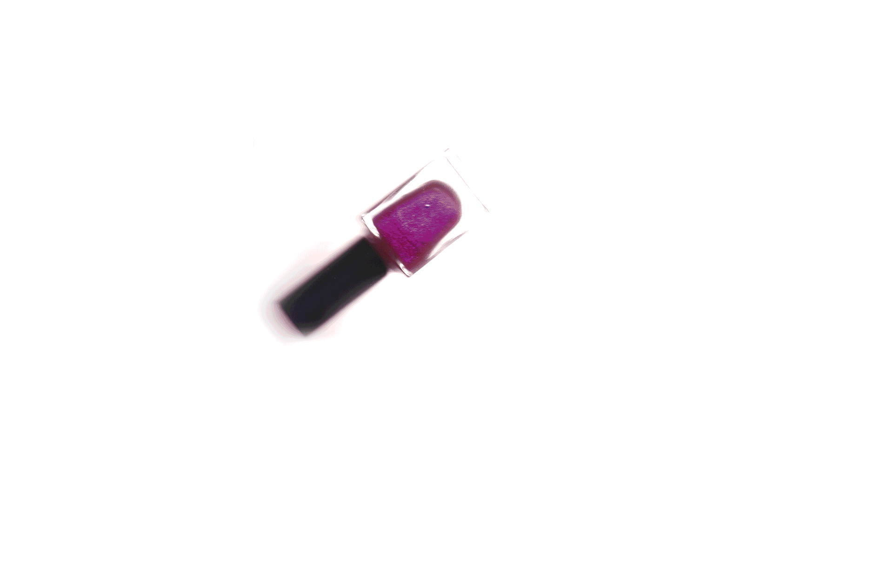

. ݁₊ ⊹ . ݁ ⟡ ݁ . ⊹ ₊ ݁.
. ݁₊ ⊹ . ݁ ⟡ ݁ . ⊹ ₊ ݁.
i used to do my nails with gel polish during covid but i developed a gel allergy… so now i can only use regular polish but im grateful bc this forced me to be okay with doing things in a simple way, which has been so nice. i tend to think so much about the things i do and want to do the most. i would spend hours planning nail designs and doing them.
my favorite color for the fall
yeah its basic so of course i had to find a way to make it a little unique to me: layering sheer colors! so many combinations to try. the possibilities are endless!
the steps i follow:
youre always looking at your hands so why not add a tiny bit of something to carry with you throughout your entireeee day??? get lost in the shimmer for a while!!!